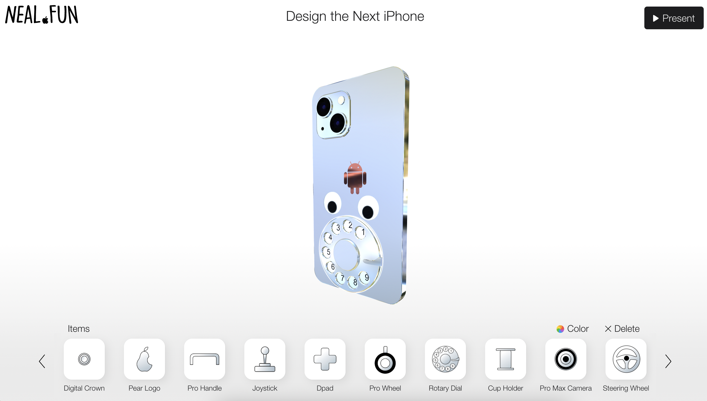
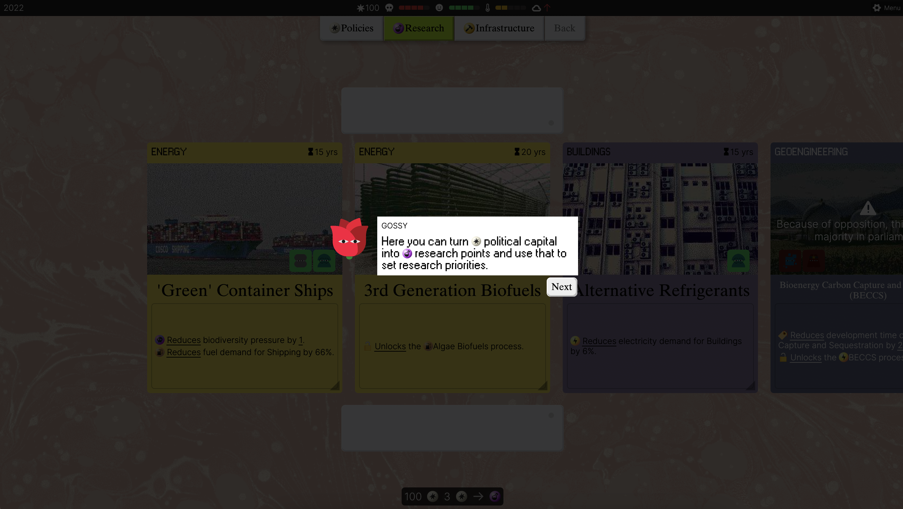
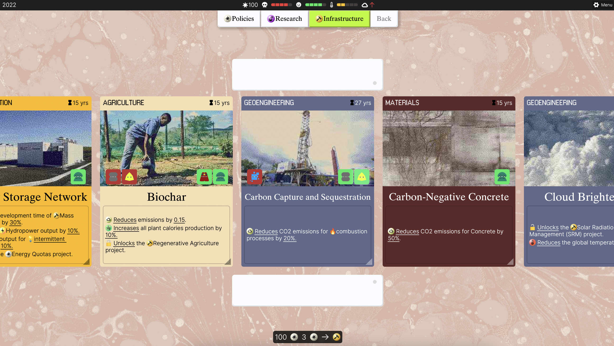

Site 1: https://neal.fun/design-the-next-iphone/ is inspirational to me because of the drag-and-drop feature and letting users customize something to their liking. When thinking about my project, I think I'll imploy a similar UI layout where options are at the bottom and get dragged upward. I also like that at the end, you can save your creation.

Site 2: https://play.half.earth/. This game was developed based on a book of the same name (Half-Earth Socialism), and I've played it through already once and I found it really informative and interesting. It puts the planning into the hands of the user and they have to balance people's satisfaction, biodiversity, and overall global warming with the kinds of policies, research, and infrastructure they decide to implement. While this is a large scope project, I find the decision making and then seeing the effects of that inspiring.

